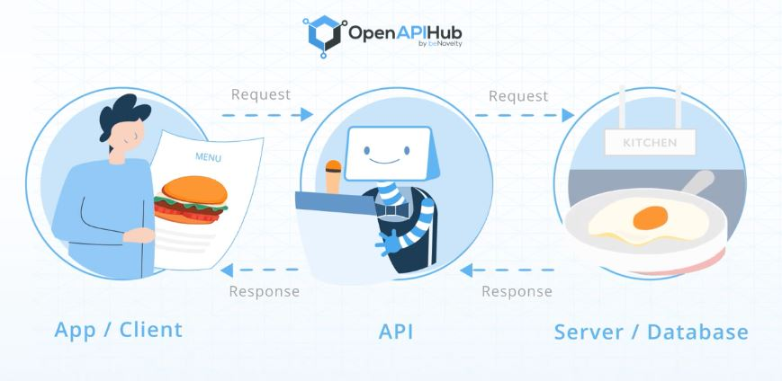
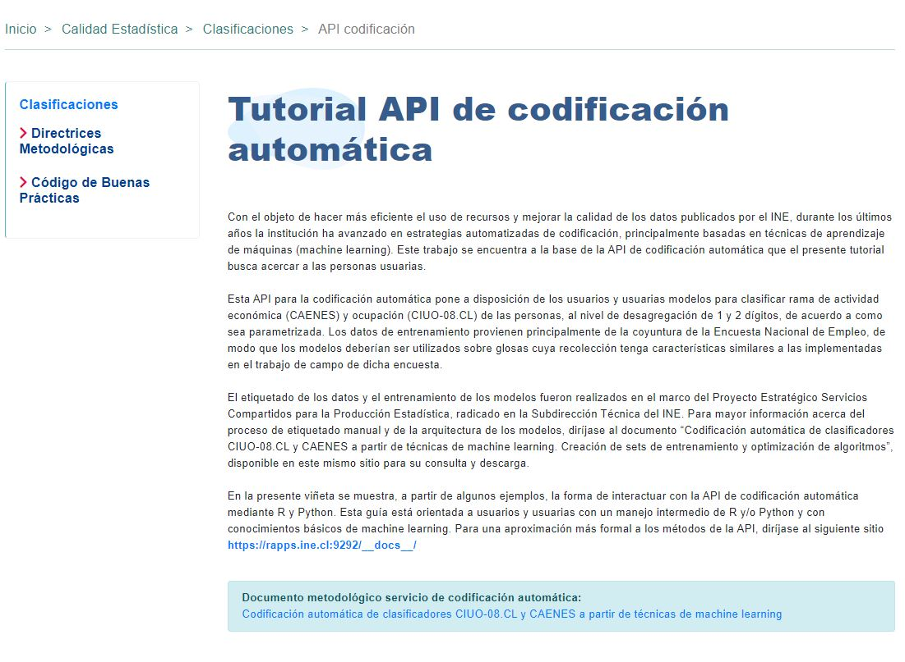
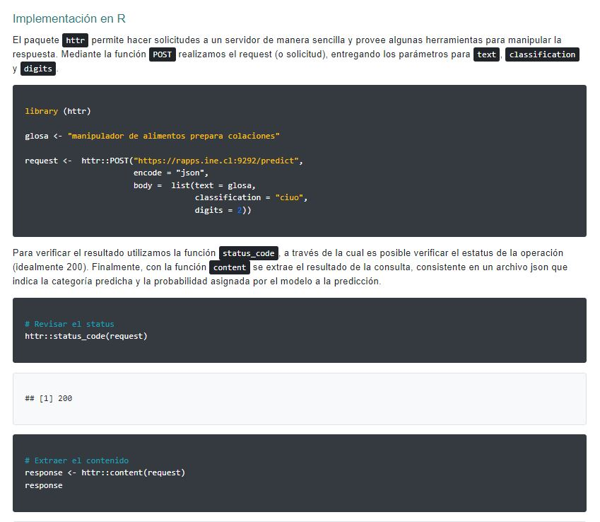
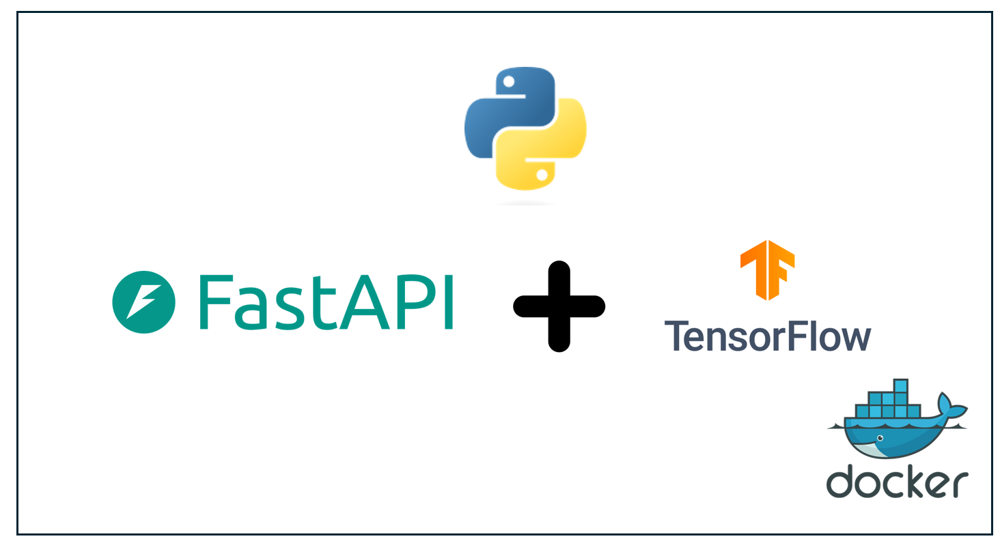
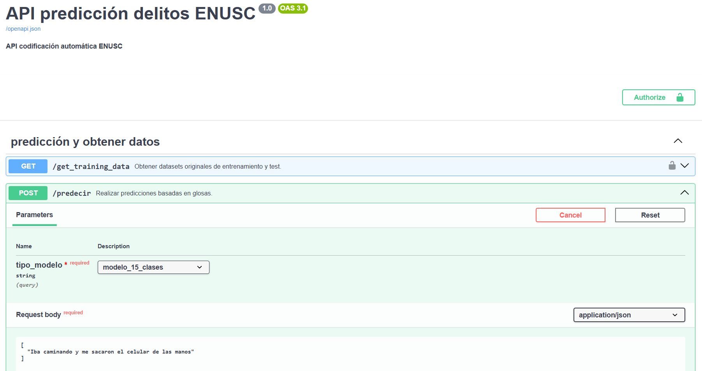
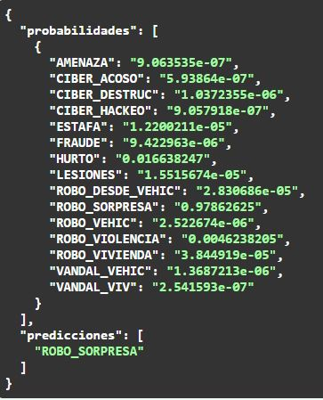
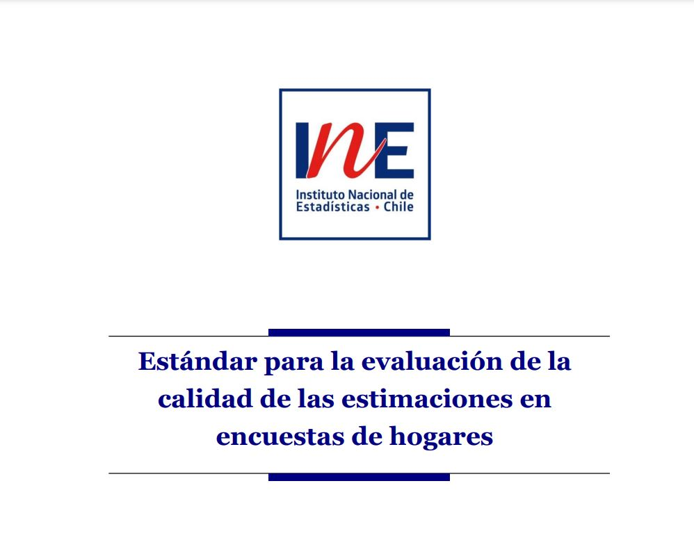
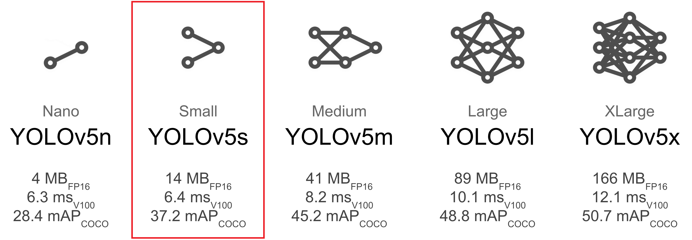
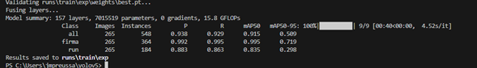
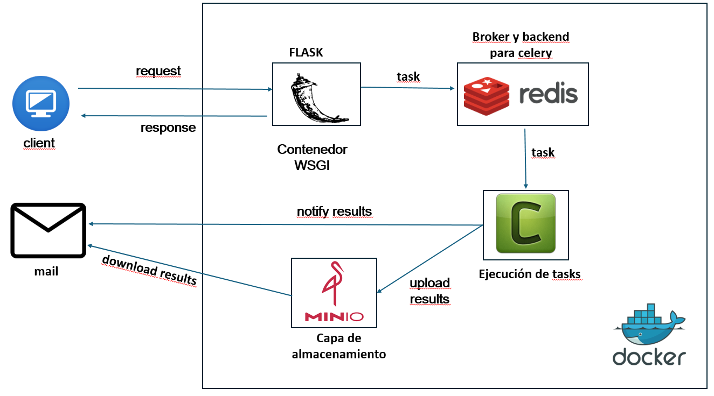

CIENCIA DE DATOS PARA EL SECTOR PÚBLICO
La experiencia del Instituto Nacional de Estadísticas
Agosto 2024
Presentación
Ignacio Agloni
Jefe Unidad de Gobierno de Datos - Instituto Nacional de Estadísticas
Magister(c) en Tecnologías de la Información - Universidad de Chile
Sociólogo - Universidad de Chile
 ifaglonij@ine.gob.cl
ifaglonij@ine.gob.cl
Procesamiento de lenguaje natural
Modelos de codificación automática en encuestas de hogares

Aplicaciones de codificación automática

CIUO-08: es el Clasificador Internacional Uniforme de Ocupaciones
CAENES: es el Clasificador de Actividades Económicas Nacional para Encuestas Sociodemográficas
Puedes acceder al tutorial de uso de esta API a través de este enlace
 https://github.com/inesscc/ineclassifiers
https://github.com/inesscc/ineclassifiers
 
Modelo desarrollado para la revisión de calidad de la Encuesta de Victimización (ENUSC)
Capa de embeddings + LSTM (Long Short-Term Memory)
La aplicación (de acceso interno) puede encontrarse en este link (Swagger)
  
Paquete calidad en R
Es el primer paquete en R desarrollado en el INE y con colaboración de CEPAL

Tiene 8207 descargas totales hasta ayer
Tiene 322 descargas el último mes
Tiene 100 descargas la última semana
Innominación de documentos con DL
Requerimiento de Transparencia al Sector público de públicar informes de actividades de personal a honorarios
No es posible divulgar nombre junto con rut y firmas de personas

Debe publicarse así:

Etiquetamos internamente ~1000 imágenes
El modelo YOLOv You Only Look Once, es un modelo de detección de objetos proveniente del paquete Ultralytics, diseñado con deep learning
El modelo cuenta con 24 capas convolucionales y 2 capas de conexión completa



Contacto
Ignacio Agloni
Jefe Unidad de Gobierno de Datos - Instituto Nacional de Estadísticas
 ifaglonij@ine.gob.cl
ifaglonij@ine.gob.cl

GRACIAS
CIENCIA DE DATOS PARA EL SECTOR PÚBLICO
La experiencia del Instituto Nacional de Estadísticas
Agosto 2024